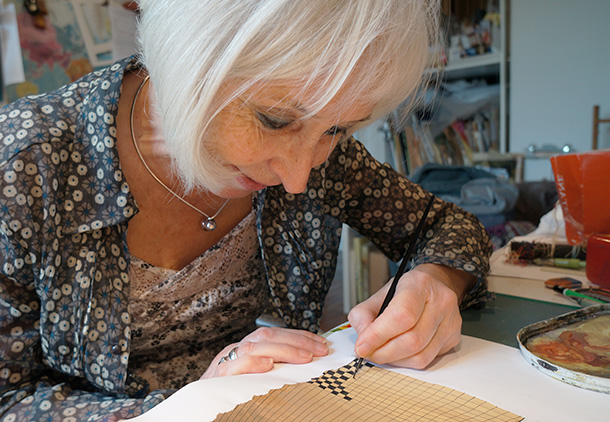

<div class="editorial">
	<p>
		Anne Buguet est illustratrice depuis une vingtaine d'années. Elle a grandi en Haute-Savoie et vit maintenant à Paris.
	</p>
	<p>
		C'est grâce à son père qu'elle découvre, durant son enfance, l'art pictural japonais au travers des œuvres du célèbre peintre Hokusaï. Cela lui donne le goût du dessin et le désir d'illustrer des livres pour enfants. Elle devient donc élève de l'École Supérieure d'Arts Appliqués Duperré, puis enseignera à son tour le dessin aux étudiants de cette école.
	</p>
	<p>
		Elle aime rendre les histoires vivantes et créer des ambiances particulières à travers ses images. Lorsqu'elle illustre un conte pour enfant elle n'hésite pas à s'inspirer de l'art traditionnel et du folklore qui lui sont liés afin de parfaire le sentiment d'immersion que chacun attend d'un beau récit.
	</p>
	<p>
		Pour dessiner ses personnages, ses paysages, ou les éléments du décor, elle explore une vaste étendue de techniques parfois des plus incongrues : toutes sortes d'encres, peintures, cirages ou colorants en tube sont répandus sur des papiers découpés, collés, pliés, froissés, ou même trempés. Cela exige évidemment de l'inventivité, mais aussi beaucoup de précision et de délicatesse.
	</p>
</div>